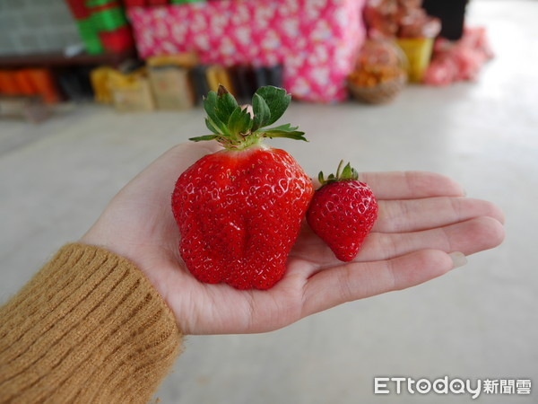
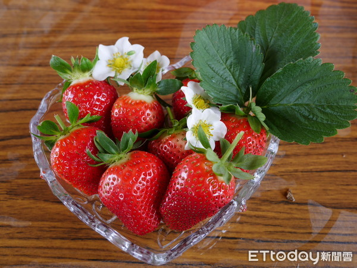
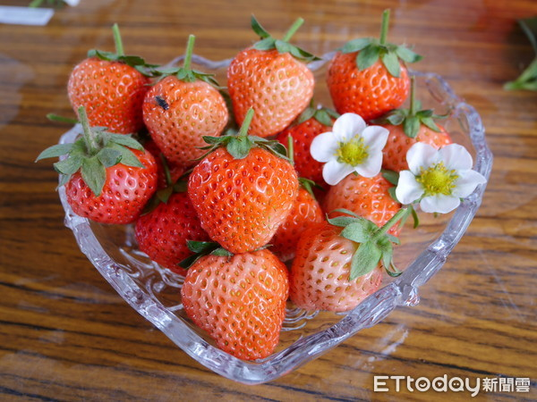

最常見的品種，是草莓園的主流款。
色澤紅潤、外表皺摺多、甜度高、偏軟而多汁，就是記憶中草莓的味道。
小顆多為圓錐形，開花時第一顆果實能長到手掌般大小。

所有品種中最好栽植的歸香水莫屬。
果形大而長，表面光滑，口感偏脆而有嚼勁，
不那麼甜，恰巧可以跟甜味中和，也因此是蛋糕業者喜歡採用的品種。
挑選秘訣，「豐香愈紅愈好吃；香水則是愈飽滿愈甜。」

許多人不知道，不用飛日本也吃得到白草莓！外觀為淡粉紅，裡頭是白色果肉，相當好辨認。
一口咬下，濃郁水蜜桃香氣瞬間湧出，跟其它品種比較起來更鬆軟多汁。

♥挑選草莓必懂的幾件事♥
↗草莓甜點↘
>草莓清洗大學問<
心得o(≧v≦)o